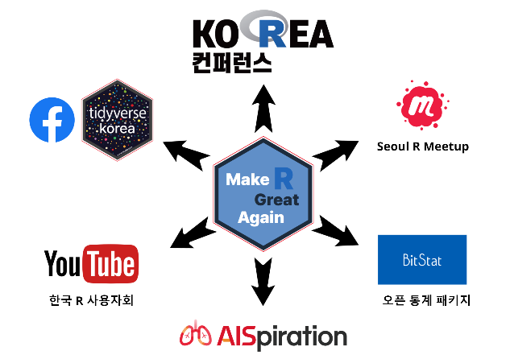

관련 자료

관련 자료
- 소프트웨어: https://github.com/bit2r
- 오픈 통계 패키지(BitStat): https://bitstat.shinyapps.io/bitstat/
- 통계 가설검정: https://r2bit.shinyapps.io/infer_shiny/
- 디지털 글쓰기: http://r2bit.ddns.net/
- 데이터: https://r2bit.com/data.html
- 실용통계 데이터셋(hsData): https://r2bit.com/hsData/
- 기초통계 데이터셋(bitData): https://r2bit.com/bitData/
- 콘텐츠: https://r2bit.com/book.html
- 데이터 과학 언플러그드: https://r2bit.com/book_unplugged/
- 데이터 과학 프로그래밍: https://r2bit.com/book_programming/
- 데이터 시각화: https://r2bit.com/book_viz/
- 데이터 과학 기본기: https://r2bit.com/book_analytics/
- 오픈통계 패키지: https://r2bit.com/Rcmdr/
- R 텍스트 마이닝: https://r2bit.com/book_tm/
- 오픈 커뮤니티와 지식나눔
- 페이스북 그룹: https://www.facebook.com/groups/tidyverse
- 서울 R 미트업: https://www.meetup.com/seoul-r-meetup/
- 발표자료: https://tidyverse-korea.github.io/seoul-R/
- 한국 R 컨퍼런스: https://use-r.kr/
- 유튜브 채널: https://www.youtube.com/channel/UCW-epmIvjBEhhVXw_F0Nq
- 디지털 글쓰기, 워크샵, 발표자료:
- 학교에서 통계와 데이터과학은 어떻게 가르쳐야 할까?
- 전국통계교육교사모임